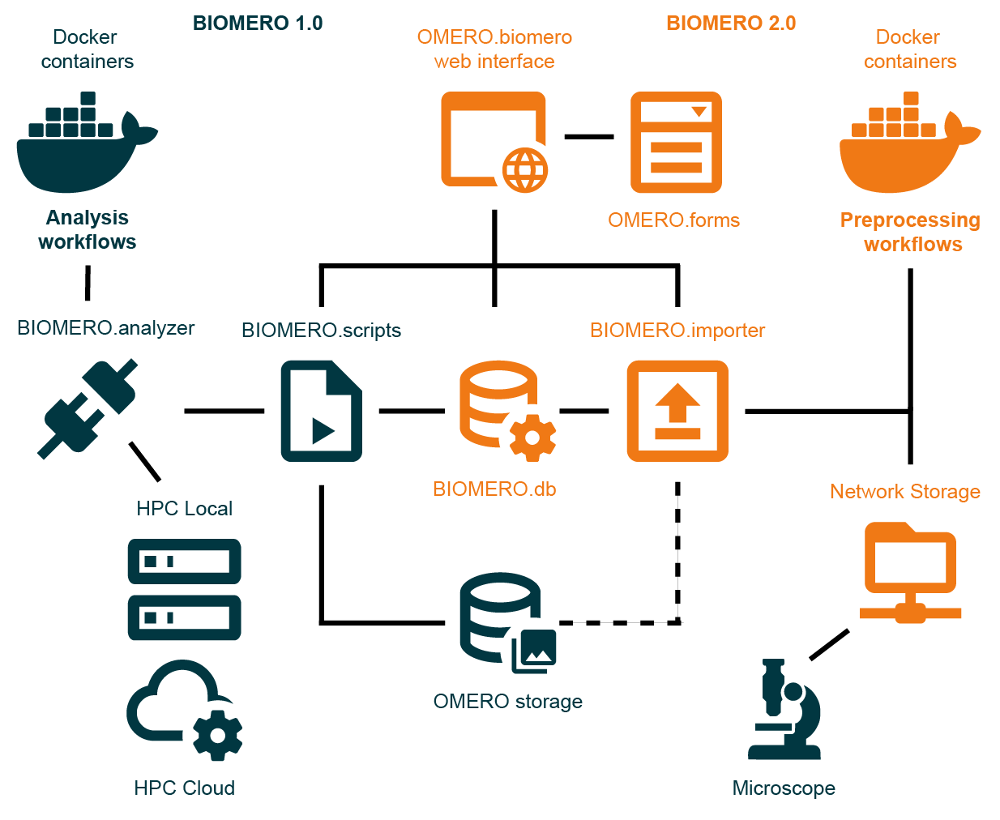

📋 Documentation Version Notice
You're reading documentation for v1.3, which is an older version. For up-to-date information, please have a look at v1.3.1 (Latest).
Architecture Overview
Note
🎥 New to BIOMERO? Watch our Overview Video video for a comprehensive introduction to BIOMERO architecture and workflows.
Note
Looking for deployment instructions? See ../sysadmin/quickstart for step-by-step setup guidance.
NL-BIOMERO transforms OMERO into a comprehensive FAIR (Findable, Accessible, Interoperable, Reusable) platform for bioimage data management and analysis. This page provides a detailed technical overview of the system architecture.
System Architecture Diagram
{kind=link}

BIOMERO 2.0 System Architecture - Complete overview showing the integration of containerized analysis workflows (BIOMERO 1.0), preprocessing workflows (BIOMERO 2.0), and the unified OMERO.biomero web interface with OMERO.forms for metadata collection.
Core Components
BIOMERO 2.0 Architecture Overview
The architecture consists of four main subsystems:
- 🔬 OMERO Infrastructure (Dark Blue)
Core image data management platform providing storage, metadata management, and user access control.
- 🧬 BIOMERO 1.0 - Analysis Workflows (Dark Blue)
Containerized analysis workflows orchestrated on remote HPC clusters or cloud environments for scalable compute processing.
- 📥 BIOMERO 2.0 - Preprocessing Workflows (Orange)
Data import and preprocessing pipelines for automated, standardized data ingestion.
- 🌐 Unified Web Interface (Orange)
Modern web interface combining OMERO.biomero (importer + analyzer) and OMERO.forms for metadata collection.
Container Architecture
The platform uses Docker Compose to orchestrate these core services:
Core Infrastructure
omeroserver - Core OMERO server with BIOMERO.scripts integration
database - PostgreSQL database for OMERO metadata and image references
omeroweb - Enhanced OMERO.web with OMERO.biomero and OMERO.forms plugins
BIOMERO Services
biomeroworker - BIOMERO.analyzer processor for remote HPC workflow orchestration
database-biomero - PostgreSQL database for BIOMERO workflow metadata and provenance
biomero-importer - BIOMERO.importer service for in-place imports from remote storage, enabling users to import data via web interface without client-side uploads
metabase - Analytics dashboard for workflow monitoring and data visualization
Data Flow Architecture
In-Place Import Pipeline
Remote Storage Access - Raw data stored on dedicated remote storage systems
Web-Based Import Interface - Users trigger in-place imports via OMERO.biomero web interface
Group-Based Access Control - Users see only their permitted storage areas (e.g., group-specific subfolders)
BIOMERO.importer Processing - Metadata extraction and possible data conversions on remote storage
Reference-Only Import - OMERO stores metadata and file references, raw data remains on remote storage
OMERO.forms Integration - Additional metadata collection through custom forms, e.g. REMBI
Note
This eliminates the need for OMERO.insight client installations and prevents server storage bloat from user uploads. Previously, in-place imports were only available via command-line access on the OMERO server itself.
Analysis Pipeline
Data Selection - Users select images/datasets via OMERO.biomero interface
Workflow Configuration - Parameters set through web interface or BIOMERO.scripts
BIOMERO.analyzer - Orchestrates workflow execution on remote HPC clusters
Results Integration - Analysis outputs automatically imported back to OMERO
Provenance Tracking - Complete analysis history stored in BIOMERO.db
Network Architecture
Internal Communication
Docker Networks - Secure internal communication between services
Database Connections - Direct PostgreSQL connections for metadata operations
Service APIs - RESTful APIs for inter-service data exchange
ICE Protocol - OMERO’s internal communication protocol for client-server interactions
OMERO.scripts - Internal OMERO-managed scripting engine and queue for workflow submission through BIOMERO.scripts to BIOMERO.analyzer
External Access Points
OMERO.web Interface - Port 4080 (HTTP) for web-based access
OMERO Server - Ports 4063/4064 for OMERO.insight and API access
Metabase Dashboard - Port 3000 for analytics and monitoring
SSH Tunneling - Secure connections to external HPC clusters
Storage Architecture
Persistent Storage
OMERO Binary Repository - Original image files with metadata linking
Database Volumes - PostgreSQL data for both OMERO and BIOMERO databases
Configuration Volumes - Persistent configuration files for services
Log Volumes - Centralized logging for troubleshooting and monitoring
Remote Storage Integration
Dedicated Storage Systems - Purpose-built storage infrastructure separate from OMERO server
Network File Systems - NFS/SMB mounts configured by system administrators
Group-Based Access - Users access only their permitted storage areas through web interface
In-Place Import Support - Direct metadata import without data duplication or transfer
Storage Offloading - Raw data remains on optimized storage, reducing OMERO server burden
Compute Integration
Demo/Development Environment
Warning
Local containerized execution is available for demonstration and development purposes only. It does not provide the full functionality, scalability, or compute offloading benefits of proper HPC integration. Production deployments should use dedicated HPC clusters.
Local Containers - Limited workflow execution for testing and development
Resource Constraints - Bound by local system CPU/memory limitations
Development Testing - Workflow validation before HPC deployment
HPC Integration (Production)
Note
This is the recommended and fully-supported production approach for BIOMERO.analyzer.
Slurm Integration - Job submission to institutional or cloud HPC clusters via SSH
SSH Key Management - Secure, automated authentication to cluster login nodes
Workflow Orchestration - Remote job monitoring, queue management, and result retrieval
Scalable Computing - True compute offloading with access to cluster resources
Security Architecture
Data Protection
Network Isolation - Docker networks prevent unauthorized access
Encrypted Communication - TLS/SSL for web interfaces
Backup Integration - Backup strategies for critical data via mounted storage
Monitoring & Analytics
Workflow Monitoring
Real-time Status - Live workflow progress tracking via database and dashboard
Error Tracking - Comprehensive logging and error reporting persisting in the logs
Provenance - Unique UUIDs for each workflow run for traceability; detailed history stored in BIOMERO.db and OMERO metadata
Data Analytics
Usage Statistics - User activity and system utilization metrics
Performance Metrics - Workflow execution times and success rates
Custom Dashboards - Configurable analytics via Metabase, feel free to create your own reports!
Extensibility & Integration
Workflow Development
Container Standards - Standardized workflow container interfaces for interoperability
Parameter Schemas - JSON-based parameter definition system for interpretability
Open Source Workflows - Community-contributed analysis pipelines for findability, accessibility and reusability
API Integration
OMERO API - Full programmatic access to image data and metadata
BIOMERO API - Workflow submission, in-place import and monitoring endpoints
REST Interfaces - Modern web service integration points
Deployment Scenarios
For detailed deployment instructions, see:
../sysadmin/quickstart - Quick setup guide for development/demo
Advanced Deployment Guide - Production deployment scenarios
Linux/Ubuntu Deployment - Linux-specific production setup
Docker Compose Scenarios - Advanced Docker configurations
Next Steps
Get Started: Follow the ../sysadmin/quickstart for immediate deployment
Develop Workflows: See Adding Your Workflow to BIOMERO for creating custom analysis pipelines
Container Details: Explore Container Development for deep-dive into individual services
Admin Guide: Check OMERO.biomero Plugin Administration for system configuration